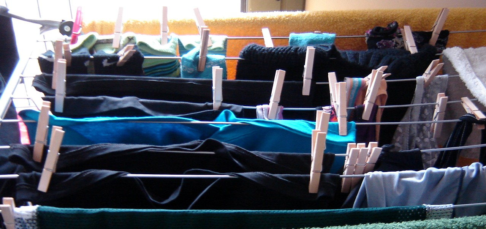
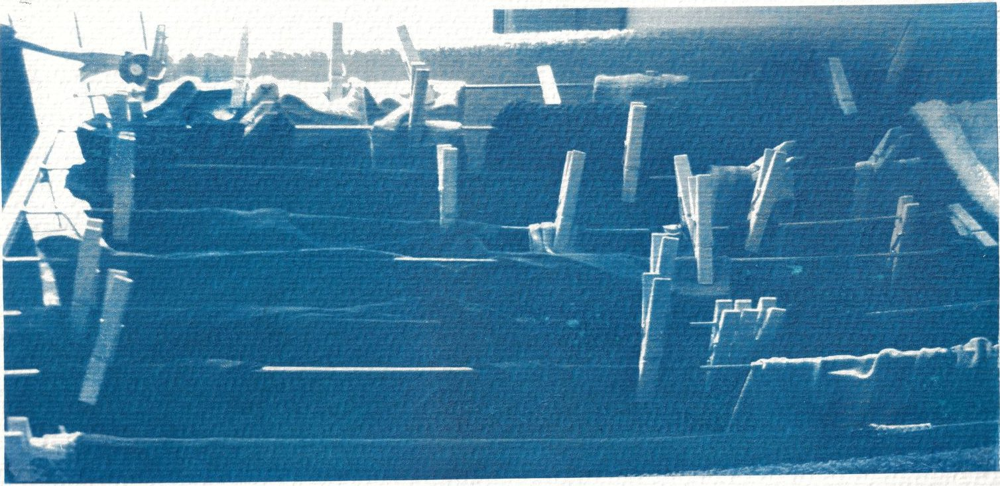

Abans de començar
El maig de 2009 vaig fer una cianotípia i una còpia Van Dyke a partir d'aquesta fotografia: química, paper i quatre minuts de sol. Avui, el mateix aspecte s'aconsegueix amb un filtre. Aquest interactiu compara les dues receptes.
Recorre les estacions en ordre o salta a la que vulguis des de la tira de dalt. A cada estació hi ha alguna cosa per tocar.
- Remediació
- Text pendent
- Transcodificació
- Text pendent
Nº 0
Analògica o digital?
6 mostres · 3 químiques, 3 de programari
Mira les sis mostres i decideix, una per una, si són química o programari. Pista: fixa’t en el paper.
Nº 1
Laboratori: cianotípia
Citrat fèrric amoniacal + ferricianur de potassi · 4′ · sol directe
Tria el paper, la preparació i l’hora del dia. L’exposició sempre dura quatre minuts, i no es pot desfer.
Nº 2
Laboratori: Van Dyke
Citrat fèrric amoniacal + àcid tartàric + nitrat de plata · 4′ · fixat
Com la cianotípia, però amb ferro i plata: la imatge surt marró. Al final, cal fixar la còpia.
Nº 3
El mateix, en un clic
feColorMatrix · 20 valors · 0,1 s
Compara la còpia de 2009 amb el filtre: fixa’t en les ombres i en la vora del paper. Després, obre el filtre per veure què hi ha a sota.


Nº 4
Taller: la teva recepta
To · contrast · gra · vinyeta
Mou els controls, posa nom al teu filtre i copia’n l’enllaç. Si vols, prova-ho amb una foto teva: no surt del teu navegador.
Nº 5
Tancament
Torna al laboratori